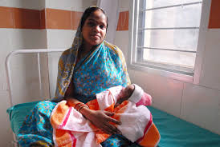

The Indian healthcare scenario presents a spectrum of contrasting landscapes. At one end of the spectrum are the glitzy steel and glass structures delivering high tech medicare to the well-heeled, mostly urban Indian. At the other end are the ramshackle outposts in the remote reaches of the “other India” trying desperately to live up to their identity as health subcenters, waiting to be transformed to shrines of health and wellness, a story which we will wait to see unfold. With the rapid pace of change currently being witnessed, this spectrum is likely to widen further, presenting even more complexity in the future.
What are the challenges in delivering healthcare to the “everyone” which must include the socially disadvantaged, the economically challenged, and the systemically marginalized? What keeps us from reaching the “everywhere,” which must include the remote areas in our Himalayan region for instance, where until recently, essentials were airlifted by air force helicopters.